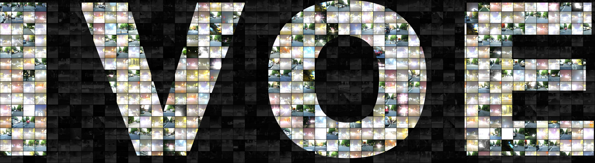

EPOFusion. An exposure-aware guidance module localizes over-exposed
visible regions, an iterative decoding fusion module refines the result progressively, and multi-scale
context fusion preserves fine detail — trained with an adaptive loss balancing intensity and texture.
The dataset

An Infrared–Visible Over-Exposure benchmark
FLIR_05511FLIR_03901FLIR_09399
Each loop runs consecutive frames as four panels — visible, infrared,
detection GT, segmentation GT. The annotations sit on targets the visible image has lost to
saturation while the co-registered infrared still resolves them.
@article{wang2026epofusion,
title={EPOFusion: Exposure-aware Progressive Optimization Method
for Infrared and Visible Image Fusion},
author={Wang, Zhiwei and He, Defeng and Zhao, Li and Zhang, Xiaoqin
and Li, Yuxing and Lam, Edmund Y},
journal={arXiv preprint arXiv:2603.16130},
year={2026}
}

 Paper
Paper
 Code
Code